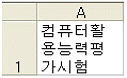
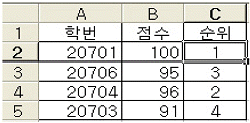
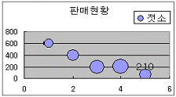
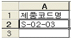
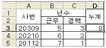
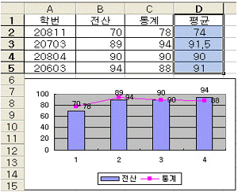

컴퓨터활용능력-3급(폐지) (2008-02-24 기출문제)
1과목: 컴퓨터 일반
1. 다음 중 파일 및 폴더에 관한 설명으로 옳지 않은 것은?
- 폴더 내에 상위 폴더와 같은 이름의 폴더를 생성할 수 있다.
- 폴더 옵션을 사용하면 폴더의 기능 및 내용 표시 방법을 지정할 수 있다.
- 미리 보기는 폴더에 있는 이미지를 폴더 아이콘에 표시하여 사용자가 폴더 내용을 빠르게 식별할 수 있도록 한다.
- 동일한 폴더 내에 같은 이름을 가진 파일을 여러 개 저장할 수 있다.
(정답률: 76%)

2. 다음 중 IP 주소체계의 등급에 속하지 않는 것은?
- C 클래스
- A 클래스
- F 클래스
- E 클래스
(정답률: 83%)
3. 다음 중 컴퓨터의 특징에 대한 의미의 설명으로 옳지 않은 것은?
- 범용성 : 한 가지 분야에 국한되지 않고 과학 계산, 사무 처리, 교육, 게임 등 여러 가지 분야에 다양하게 사용된다.
- 창조성 : 컴퓨터를 통해 개인의 창조성을 확대시켜 준다.
- 자동성 : 입력한 자료를 처리함에 있어 중간에 사람이 개입하지 않아도 작성된 프로그램에 따라 자동으로 처리한다.
- 정확성 : 계산이나 처리 과정에 있어 발생할 수 있는 오차를 최소화하여 정확한 처리를 출력해 준다.
(정답률: 80%)
4. 다음 중 폴더나 파일을 삭제하는 방법으로 옳지 않은 것은?
- 삭제하려는 폴더나 파일을 선택한 후 마우스 오른쪽 버튼을 누르면 나타나는 바로 가기 메뉴에서 [삭제]를 선택한다.
- [탐색기]에서 삭제 하려는 폴더나 파일을 선택한 후 도구 모음에서 삭제 아이콘을 클릭한다.
- 삭제 하려는 폴더 또는 파일을 선택한 후 [Ctrl]+[X]를 누른다.
- 삭제하려는 폴더나 파일을 선택한 후 드래그하여 바탕화면의 휴지통에 넣는다.
(정답률: 81%)
5. 컴퓨터 부팅 과정에서 ‘DISK BOOT FAILURE’라는 메시지가 표시되었다. 다음 중 어느 경우에 발생하는가?
- 부트 파티션이 활성화되지 않았을 경우에 발생한다.
- HDD를 인식하지 못하는 경우에 발행한다.
- 하드디스크에 연결된 케이블의 문제이다.
- 시스템 파일의 손상이나 디스크 부트 섹터의 손상으로 발생된다.
(정답률: 72%)
6. 다음 중 [탐색기]-[보기]-[자세히]를 선택했을 때 표시되지 않는 것은?
- 파일 이름
- 파일 소유자
- 수정한 날짜
- 파일과 폴더의 크기
(정답률: 90%)
7. 웹사이트를 검색하다가 다음에 다시 방문하고 싶은 사이트를 발견하면 그 주소를 등록해 두었다가 다음에 쉽게 다시 연결 할 수 있도록 하는 기능을 무엇이라 하는가?
- 기록(History)
- 즐겨찾기(Bookmark)
- 캐싱(Cashing)
- 쿠기(Cookie)
(정답률: 92%)
8. 다음 중 휴지통에 관한 설명으로 옳지 않은 것은?
- 삭제한 파일이 휴지통의 저장 용량보다 크면 휴지통의 크기에 맞게 파일이 축소되어 휴지통에 저장된다.
- [검색]을 실행하여 파일을 검색하면 휴지통에 저장된 파일은 검색 대상에서 제외된다.
- 휴지통에서 되살리려는 파일을 선택하고 마우스 오른쪽 버튼을 누른 후 [복원]을 실행하면 원래의 위치에 복구된다.
- [Shift]+[Delete] 키를 눌러 파일을 삭제하면, 삭제된 파일은 휴지통에 보관되지 않는다.
(정답률: 77%)
9. 다음 중 INTERNIC에서 부여하는 도메인 네임으로 국제 조약에 의해 설립된 기관의 의미와 관련된 도메인 네임으로 옳은 것은?
- ac
- go
- int
- ne
(정답률: 67%)
10. 다음 중 컴퓨터의 처리속도 단위를 빠른 순서부터 나열한 것은?
- ms-μs-ns-ps
- ps-ns-μs-ms
- μs-ps-ms-ns
- ns-ms-ps-μs
(정답률: 78%)
11. 다음 중 파일이나 폴더의 이름을 바꾸는 방법으로 옳지 않은 것은?
- 변경할 파일이나 폴더를 선택하고 마우스 오른쪽 버튼을 클릭 후 [이름 바꾸기]를 선택하여 새로운 이름을 입력한다.
- 변경할 파일이나 폴더를 선택하고 [F3] 키를 누른 후 새로운 이름을 입력한다.
- 변경할 파일이나 폴더를 선택하고 마우스 왼쪽 버튼을 한 번 클릭한 후 새로운 이름을 입력한다.
- 변경할 파일이나 폴더를 선택하고 [파일]-[이름 바꾸기]를 선택하고 새로운 이름을 입력한다.
(정답률: 78%)
12. 다음 중 웹 버그(Web bugs)에 대한 설명으로 옳지 않은 것은?
- 일종의 스파이웨어이다.
- 웹 페이지나 이메일을 누가 보는지 감시하기 위해 만들어진 파일이다.
- 이미지 태그(tag)를 넣어 표현하므로 웹 페이지나 이메일을 읽는 사람도 볼 수 있다.
- 웹 페이지의 불법 복제를 추적하는데 사용하기도 한다.
(정답률: 70%)
13. 다음 중 동시에 양방향으로 전송할 수 있는 데이터 전송방식으로 옳은 것은?
- Full-Duplex 방식
- Half-Duplex 방식
- Simplex 방식
- Modem 방식
(정답률: 72%)
14. 다음 중 인터넷 기술과 통신규약을 이용하여 조직내부의 업무를 통합하는 정보시스템은 무엇인가?
- Internet
- Ethernet
- Extranet
- Intranet
(정답률: 76%)
15. 노트북을 사용할 때 모뎀이나 랜 카드 같은 주변장치를 연결하기 위해 사용하는 방식은 무엇인가?
- DMA 방식
- SCSI 방식
- PCMCIA 방식
- BUS 방식
(정답률: 54%)
16. 다음 중 전 세계의 거의 모든 표기문자를 표시할 수 있는 것으로 16비트를 사용하는 코드는 무엇인가?
- 비씨디(BCD) 코드
- 아스키(ASCII) 코드
- 해밍(Hamming) 코드
- 유니(Uni) 코드
(정답률: 86%)
17. 컴퓨터 중앙처리 장치(CPU)에서 입력된 데이터를 명령에 따라 산술 및 논리연산을 수행하는 장치는?
- CU(Control Unit)
- IR(Instruction Register)
- ALU(Arithmetic Logical Unit)
- PC(Program Counter)
(정답률: 76%)
18. 다음 중 보조프로그램 중 하나인 [그림판]을 설치하고자 하는 경우에 이용하는 항목으로 가장 옳은 것은?
- 프로그램 추가/제거의 ‘Windows 구성요소 추가/제거’
- 프로그램 추가/제거의 ‘새 프로그램 추가’
- 프로그램 추가/제거의 ‘기본 프로그램 설정’
- 프로그램 추가/제거의 ‘프로그램 변경/제거’
(정답률: 69%)
19. 다음 중 컴퓨터 바이러스의 기능별 분류 중에서 감염 부위에 따른 분류에 속하지 않는 것은?
- 파생 바이러스
- 파일 바이러스
- 부트/파일 바이러스
- 매크로 바이러스
(정답률: 68%)
20. 다음 중 C 드라이브의 [등록정보] 창에 대한 설명으로 옳지 않은 것은?
- [일반] 탭에서 드라이브의 이름을 변경할 수 있다.
- [도구] 탭에서 디스크의 여유 공간을 확인할 수 있고 디스크 정리를 실행할 수 있다.
- [할당량] 탭에서 할당량 한도를 넘는 사용자에게 디스크 공간 주기 않음을 선택할 수 있다.
- [공유] 탭에서 현재 드라이브의 공유여부를 설정할 수 있다.
(정답률: 47%)
2과목: 스프레드시트 일반
21. 다음 중 수식에 대한 설명으로 옳지 않은 것은?
- 수식은 ‘=’ 기호로 시작된다.
- 기본적으로 수식에서 참조하는 셀의 값이 변경되면 관련 셀의 값이 변경된다.
- 수식은 연산자, 함수, 상수, 셀 참조 등으로 구성된다.
- 수식이 입력된 셀에는 수식이 입력되고 수식의 결과 값은 수식 입력줄에 나타난다.
(정답률: 70%)
22. 셀에 입력한 문자열의 길이가 셀의 열 너비보다 긴 경우, 다음과 같이 셀에 표시하기 위한 셀 서식의 맞춤기능으로 옳은 것은?

- 셀 병합
- 셀에 맞춤
- 텍스트 줄 바꿈
- 방향
(정답률: 70%)
23. 다음 중 엑셀에서 인쇄에 사용되는 바로 가기키로 옳은 것은?
- [Ctrl]+[P]
- [Ctrl]+[R]
- [Alt]+[P]
- [Alt]+[R]
(정답률: 76%)
24. [C2] 셀에 Rank 함수를 이용하여 ‘점수’에 대한 순위를 구하는 수식을 작성하고, [C5] 셀까지 채우기 핸들을 이용하여 순위를 정하였다. 다음 중 [C2] 셀에 들어갈 알맞은 식은?

- =RANK(B2, B2:B5)
- =RANK(B2, $B$2:$B$5)
- =RANK($B$2, $B$2:$B$5)
- =RANK(B2, $B2:$B5)
(정답률: 76%)
25. 다음 중 엑셀 파일의 확장자에 대한 설명으로 옳지 않은 것은?
- xlt : 엑셀 서식 파일
- xql : 엑셀 백업 파일
- xls : 엑셀 통합 문서 파일
- xlw : 엑셀 작업 영역 파일
(정답률: 68%)
26. 다음 중 시트 이름 변경에 대한 설명으로 옳은 것은?
- 시트 이름 사이에 공백을 사용할 수 없다.
- 시트 이름에 한글 및 특수 문자(/, ?, *, [, ]...) 등을 포함할 수 있다.
- [도구]-[보호]-[시트 보호]를 선택하고 암호를 입력하면 시트 이름을 변경할 수 없다.
- 시트 탭을 마우스로 더블클릭하여 시트 이름을 변경할 수 있다.
(정답률: 46%)
27. 고과 점수가 높은 직원에서 고과 점수가 낮은 순으로 정렬하고, 연차가 높은 직원에서 연차가 낮은 직원 순으로 정렬하고, 고과 점수와 연차가 같은 경우에는 직급이 높은 직원에서 직급이 낮은 직원 순으로 정렬하고 싶다. 직급은 숫자가 작을수록 높은 직급이다. 다음 중 정렬 기준과 정렬 방식이 옳게 연결된 것은?
- 고과 점수-오름차순, 연차-내림차순, 직급-내림차순
- 고과 점수-내림차순, 연차-오름차순, 직급-내림차순
- 고과 점수-오름차순, 연차-내림차순, 직급-오름차순
- 고과 점수-내림차순, 연차-내림차순, 직급-오름차순
(정답률: 77%)
28. 다음 엑셀 통합문서에 관한 설명 중 옳지 않은 것은?
- 공유된 통합 문서는 변경 권한을 가진 한 사람만이 문서 내용을 변경할 수 있다.
- [보내기] 기능을 이용하여 전자메일로 다른 사람에게 통합문서를 보낼 수 있다.
- 통합 문서 내의 특정 워크시트의 내용을 변경할 수 없도록 보호할 수 있다.
- 일정한 형식이나 스타일 적용을 위한 서식 파일(*.xlt)을 만들 수 있다.
(정답률: 65%)
29. 다음 중 인쇄 미리 보기에 대한 설명으로 옳지 않은 것은?
- 인쇄 미리 보기를 종료할 때는 [ESC]를 누른다.
- 숨겨진 행과 열도 인쇄 미리 보기에서 표시된다.
- 인쇄 미리 보기에서 돋보기를 클릭하면 화면이 확대/축소된다.
- 인쇄 미리 보기 상태에서 여백을 조정할 수 있는 여백 핸들을 표시하거나 숨길 수 있다.
(정답률: 59%)
30. 다음 중 페이지 설정 대화상자에 대한 설명으로 옳지 않은 것은?
- 인쇄할 페이지의 용지 방향을 가로, 세로로 바꾼다.
- 인쇄용지에 자동 맞춤을 할 수 있다.
- 머리글과 바닥글을 편집할 수 있다.
- 용지의 크기는 ‘A4’ 또는 ‘B5’만 설정할 수 있다.
(정답률: 79%)
31. 다음 차트의 종류로 옳은 것은?

- 거품형
- 분산형
- 방사형
- 주식형
(정답률: 90%)
32. 다음 중 설명이 옳지 않은 것은?(문제오류로 2, 3번만 정답 처리한 문제 입니다. 여기서는 2번을 정답 처리 합니다.)
- [셀 서식]-[보호] 탭에서 잠금을 선택하면 서식을 변경할 수 없다.
- [셀 서식]-[보호] 탭에서 잠금을 선택하여도 셀 데이터의 이동이 가능하다.
- 2.5가 입력된 셀에 분수 서식을 적용하면 “2 2/1”과 같이 표시된다.
- 날짜 서식에서 ‘dd’는 날짜의 ‘일’을 표시하며, ‘ddd’는 요일을 영문자 3자리로 표시한다.
(정답률: 68%)
33. 다음 중 차트 마법사의 4단계 중 3단계에서 설정하는 항목은 어느 것인가?
- 범례
- 차트의 종류
- 데이터 범위
- 차트 삽입 위치
(정답률: 74%)
34. [A2] 셀에서 채우기 핸들을 이용하여 [A3] 셀로 이동하였다. 다음 중 표시된 결과 값으로 옳은 것은?

- S-03-04
- S-03-03
- S-02-04
- T-02-03
(정답률: 77%)
35. [D3] 셀에 ‘=SUM($B$3:C3)’ 수식을 입력하고 [자동 채우기]를 이용하여 [D4] 셀로 이동하였다. 다음 중 [D4] 셀에 표시되는 값으로 옳은 것은?

- 16
- 18
- 24
- 8
(정답률: 66%)
36. 차트에서 [D1:D5] 영역을 선택하고 [Ctrl]+[C] 키를 누른 다음, 차트 영역을 선택하고 [Ctrl]+[V] 키를 눌렀을 때 나타나는 실행 결과로 옳은 것은?

- 해당 범위의 데이터에 대한 범례는 추가되지 않는다.
- 전 데이터 계열의 차트가 세로 막대형으로 변경된다.
- 범위로 지정된 평균이 데이터 계열에 추가된다.
- 평균만 표시되는 그래프로 변경된다.
(정답률: 71%)
37. 다음 중 셀에 데이터를 입력하는 방법에 대한 설명으로 옳은 것은?
- 한 셀에 문자열을 두 줄로 입력하면 [Ctrl]+[Enter]를 누른다.
- 날짜는 연월일 사이에 반드시 [-]만 사용된다.
- 입력한 문자보다 셀 너비가 좁으면 ‘###’으로 표시된다.
- [Ctrl]+[콜론(:)]을 누르면 현재 시스템에 설정된 시간이 자동으로 입력된다.
(정답률: 45%)
38. 다음 중 삭제 또는 지우기에 대한 설명으로 옳은 것은?
- 삭제는 지워진 공간의 셀이 시트에서 삭제되고 지우기는 지워진 공간의 셀이 빈 셀로 시트에 표시된다.
- 삭제는 실행 후 취소할 수 없지만 지우기는 실행 후 취소 할 수 있다.
- [D5:F10] 셀의 영역을 지정하고 [삭제]를 선택하면 해당 행 전체가 자동으로 삭제된다.
- [지우기]-[서식]을 실행하면 서식은 지워지지 않고 내용만 지워진다.
(정답률: 50%)
39. 기본적으로 하나의 데이터 계열만 가지며 값 축 및 항목 축을 가지지 않는 차트는?
- 꺽은선형 차트
- 거품형 차트
- 방사형 차트
- 원형 차트
(정답률: 75%)
40. 다음 중 함수의 실행 결과로 옳지 않은 것은?
- =UPPER("Good Mornning!") ⇒ GOOD MORNNING!
- =PROPER("YOU BEAUTIFUL") ⇒ You Beautiful
- =REPLACE("스타크래프트“,2,4,”타“) ⇒ 스타
- =VALUE("1234") ⇒ 1234
(정답률: 73%)